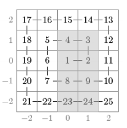

BZPRO
#5184. [Baltic2016]Spiral
内存限制：256 MiB
时间限制：30 Sec
提交
提交记录
讨论
题目描述
一个大小为(2n+1)*(2n+1)的方格按照如下方法构造。数字1放在正方形的中间，数字2放在1的右边，接下来的数字
按照逆时针的顺序填充这个方格。你需要计算q个询问的答案，每个询问查询一个矩形内的数的和，结果对10^9+7
取模。比如n=2的方格中，灰色区域的数的和是74：

输入格式
输入的第一行包含2个整数n,q:方格的大小和询问的数量。
接下来的q行每行包含4个整数x1,y1,x2,y2(-n<=x1<=x2<=n,-n<=y1<=y2<=n)。
表示你要计算的矩形区域的两个角落的坐标为（x1,y1）(x2,y2)
1<=N<=10^9
1<=q<=100
输出格式
每个询问输出一行答案
样例
样例输入
2 3
0 -2 1 1
-1 0 1 0
1 2 1 2
样例输出
74
9
14
数据范围与提示